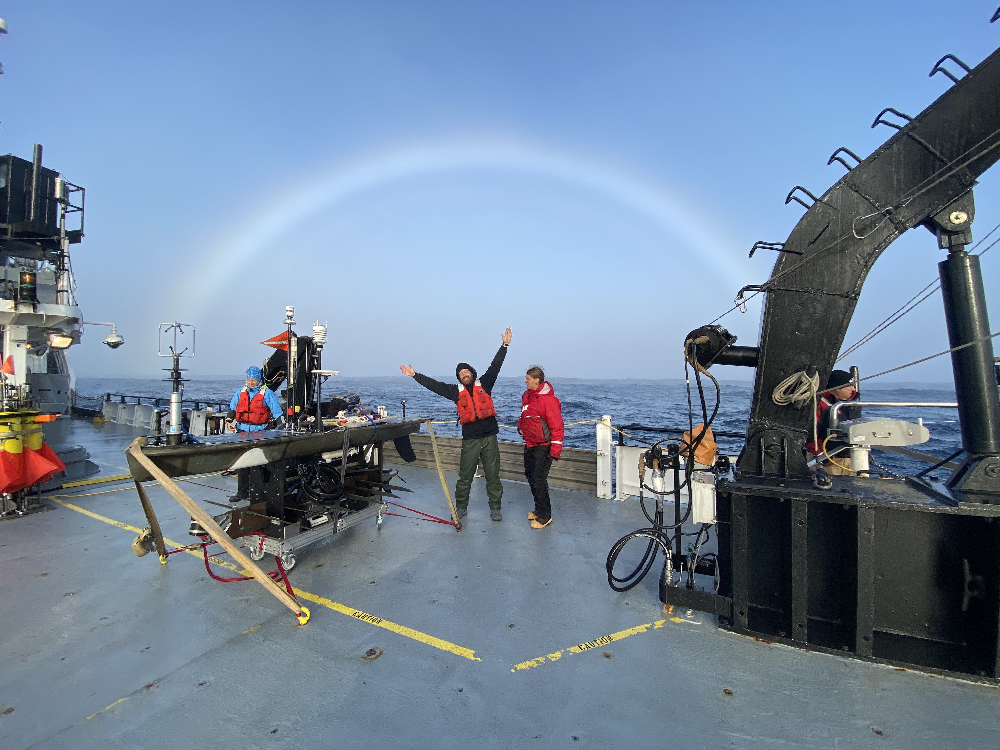
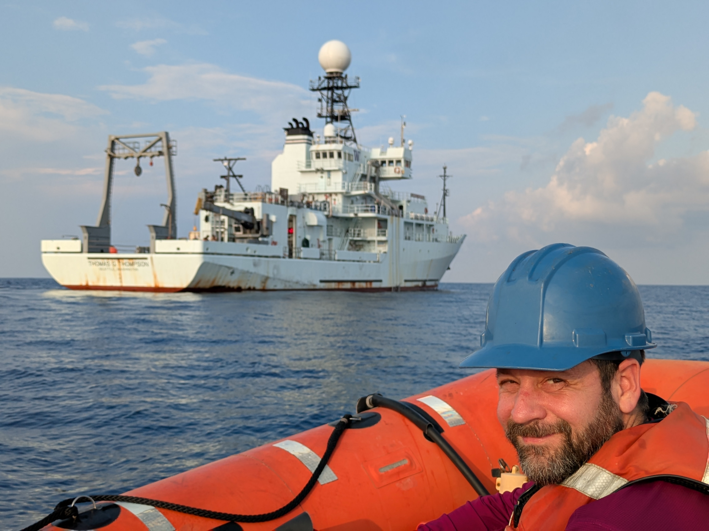
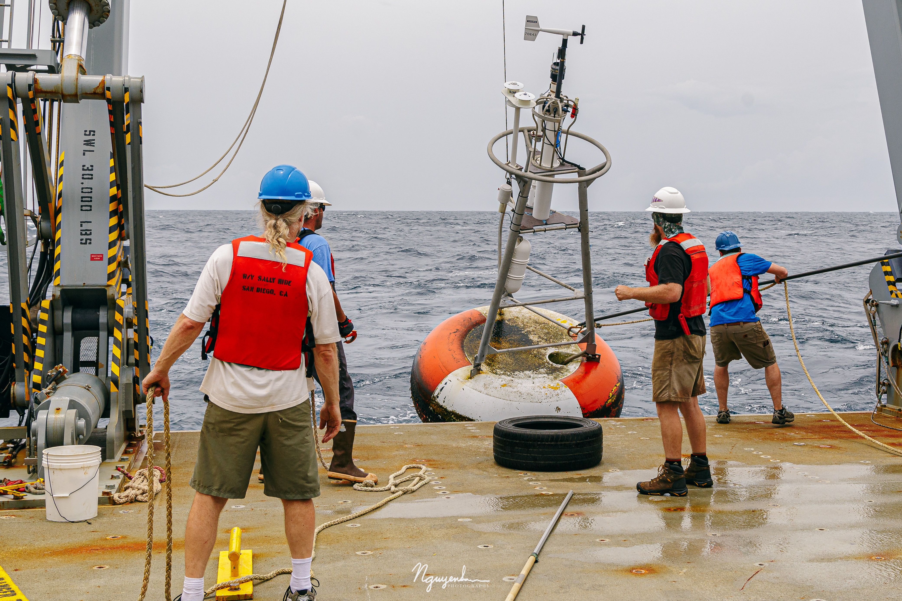
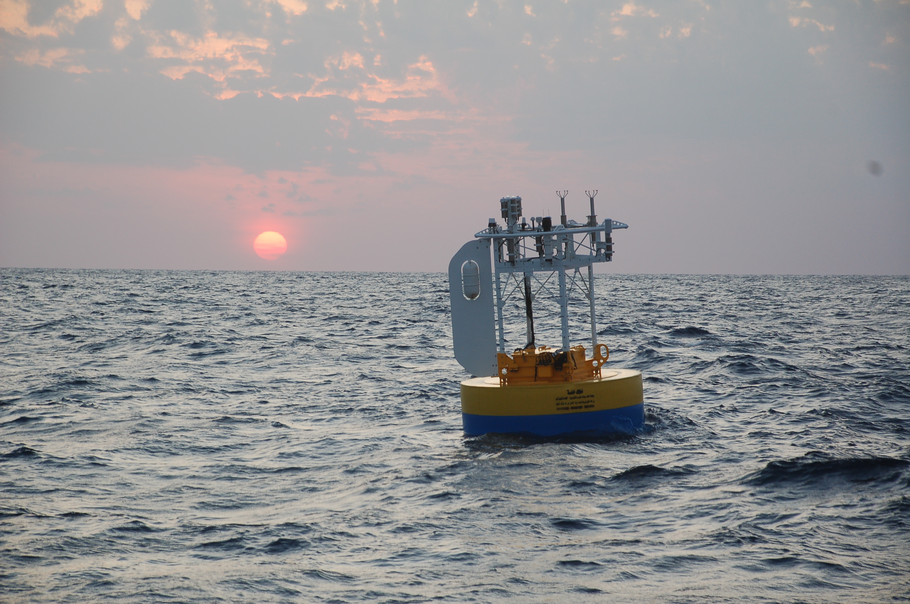
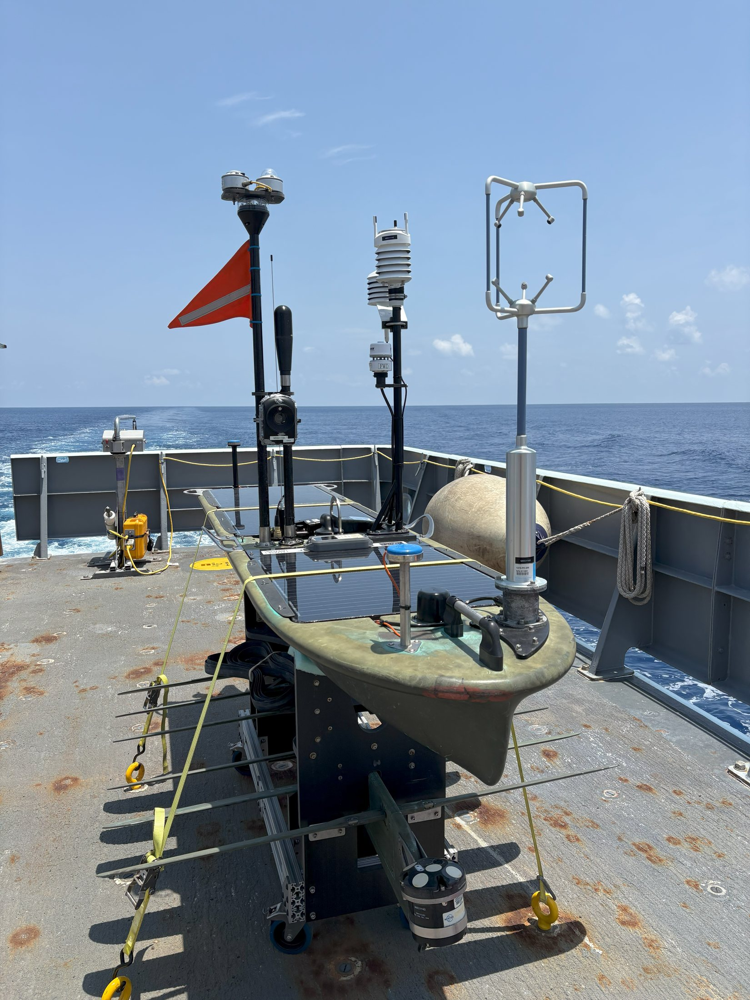

S-MODE pilot campaign, Northeast Pacific, October 2021.
This version keeps the strongest images from the existing gallery but presents them in a quieter, editorial arrangement that matches the rest of the concept.





